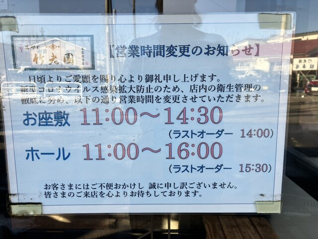
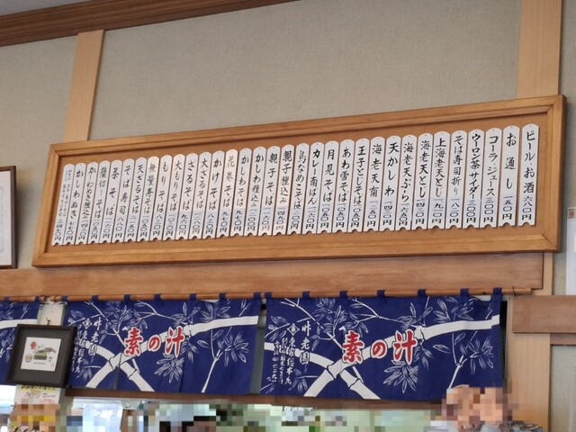
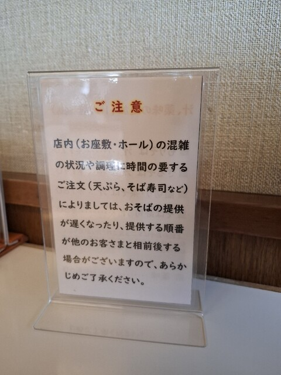

Photo Gallery
竹老園 東家総本店とは
1874年（明治7年）小樽にて創業し、のちに釧路へと根を下ろした竹老園 東家総本店。150年以上の歴史を刻む北海道最古の蕎麦店のひとつです。春採湖と千代ノ浦海岸を望む落ち着いた場所に店を構え、皇族・著名人をはじめ多くの美食家が訪れてきた格式ある名店です。
昭和天皇が当店を訪れた際、蘭切りそばをおかわりされたという逸話は今も語り継がれています。更科粉にクロレラを加えた美しい緑色の「藪そば」、卵黄をつなぎに用いた「蘭切りそば」など、他では味わえない独自の蕎麦文化を守り続けています。
実食レビュー
東家の蕎麦はまず見た目で驚かせます。更科粉にクロレラを加えた「藪そば」は美しい翠緑色をしており、「通年新そばのような緑を楽しんでほしい」という初代の想いが込められています。喉越し良くすっと体に入るのどかな一杯です。
おすすめメニュー
📎 公式Webサイト
現在、独立した公式Webサイトは確認できていません。最新情報はお電話または各グルメサイトでご確認ください。